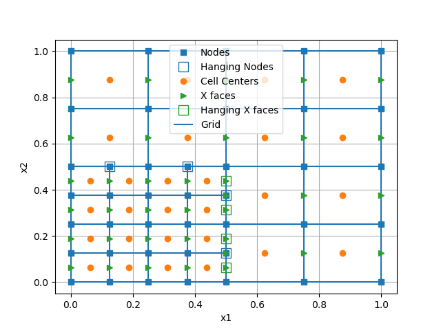

Note
Click here to download the full example code
QuadTree: Hanging Nodes¶
You can give the refine method a function, which is evaluated on every cell of the TreeMesh.
Occasionally it is useful to initially refine to a constant level (e.g. 3 in this 32x32 mesh). This means the function is first evaluated on an 8x8 mesh (2^3).
Out:
/home/travis/build/simpeg/discretize/examples/plot_quadtree_hanging.py:41: UserWarning: Matplotlib is currently using agg, which is a non-GUI backend, so cannot show the figure.
plt.show()
import discretize
import matplotlib.pyplot as plt
def run(plotIt=True):
M = discretize.TreeMesh([8, 8])
def refine(cell):
xyz = cell.center
dist = ((xyz - [0.25, 0.25])**2).sum()**0.5
if dist < 0.25:
return 3
return 2
M.refine(refine)
if plotIt:
M.plotGrid(nodes=True, cells=True, facesX=True)
plt.legend((
'Grid',
'Cell Centers',
'Nodes',
'Hanging Nodes',
'X faces',
'Hanging X faces'
))
if __name__ == '__main__':
run()
plt.show()
Total running time of the script: ( 0 minutes 0.183 seconds)